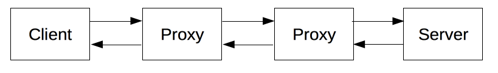

Seguridad en la web
Al hablar sobre la seguridad en la web se suele hablar de dos HTTPS y SSL, sin embargo es necesario conocer primero que es HTTP.
Protocolo HTTP
HTTP, de sus siglas en inglés: "Hypertext Transfer Protocol", es el nombre de un protocolo el cual nos permite realizar una petición de datos y recursos, como pueden ser documentos HTML. Es la base de cualquier intercambio de datos en la Web, y un protocolo de estructura cliente-servidor, esto quiere decir que una petición de datos es iniciada por el elemento que recibirá los datos (el cliente), normalmente un navegador Web. Así, una página web completa resulta de la unión de distintos sub-documentos recibidos, como, por ejemplo: un documento que especifique el estilo de maquetación de la página web (CSS), el texto, las imágenes, vídeos, scripts, etc.

Este protocolo fue diseñado a principios de la década de 1990. HTTP es un protocolo ampliable, que ha ido evolucionando con el tiempo. Es lo que se conoce como un protocolo de la capa de aplicación, y se transmite sobre el protocolo TCP, o el protocolo encriptado TLS (en-US), aunque teóricamente podría usarse cualquier otro protocolo fiable. Gracias a que es un protocolo capaz de ampliarse, se usa no solo para transmitir documentos de hipertexto (HTML), si no que además, se usa para transmitir imágenes o vídeos, o enviar datos o contenido a los servidores, como en el caso de los formularios de datos. HTTP puede incluso ser utilizado para transmitir partes de documentos, y actualizar páginas Web en el acto.
Arquitectura
HTTP es un protocolo basado en el principio de cliente-servidor: las peticiones son enviadas por una entidad: el agente del usuario (o un proxy a petición de uno). La mayoría de las veces el agente del usuario (cliente) es un navegador Web, pero podría ser cualquier otro programa, como por ejemplo un programa-robot, que explore la Web, para adquirir datos de su estructura y contenido para uso de un buscador de Internet.
Cada petición individual se envía a un servidor, el cuál la gestiona y responde. Entre cada petición y respuesta, hay varios intermediarios, normalmente denominados proxies (en-US), los cuales realizan distintas funciones, como: gateways o caches.
En realidad, hay más elementos intermedios, entre un navegador y el servidor que gestiona su petición: hay otros tipos de dispositivos: como routers o modems. Sin embargo, es gracias a la arquitectura en capas de la Web, que estos intermediarios, son transparentes al navegador y al servidor, ya que HTTP se apoya en los protocolos de red y transporte. HTTP es un protocolo de aplicación, y por tanto se apoya sobre los anteriores. Aunque para diagnosticar problemas en redes de comunicación, las capas inferiores son irrelevantes para la definición del protocolo HTTP.
Características del protocolo
Sencillez
Incluso con el incremento de complejidad, que se produjo en el desarrollo de la versión del protocolo HTTP/2, en la que se encapsularon los mensajes, HTTP esta pensado y desarrollado para ser leído y fácilmente interpretado por las personas, haciendo de esta manera más facil la depuración de errores, y reduciendo la curva de aprendizaje para las personan que empieza a trabajar con él.
Extensibilidad
Presentadas en la versión HTTP/1.0, las cabeceras de HTTP, han hecho que este protocolo sea fácil de ampliar y de experimentar con él. Funcionalidades nuevas pueden desarrollarse, sin más que un cliente y su servidor, comprendan la misma semántica sobre las cabeceras de HTTP.
Sesiones sin estados
HTTP es un protocolo sin estado, es decir: no guarda ningún dato entre dos peticiones en la mísma sesión. Esto crea problemáticas, en caso de que los usuarios requieran interactuar con determinadas páginas Web de forma ordenada y coherente, por ejemplo, para el uso de "cestas de la compra" en páginas que utilizan en comercio electrónico. Pero, mientras HTTP ciertamente es un protocolo sin estado, el uso de HTTP cookies, si permite guardar datos con respecto a la sesión de comunicación. Usando la capacidad de ampliación del protocolo HTTP, las cookies permiten crear un contexto común para cada sesión de comunicación.
Conexiones
Una conexión se gestiona al nivel de la capa de trasporte, y por tanto queda fuera del alcance del protocolo HTTP. Aún con este factor, HTTP no necesita que el protocolo que lo sustenta mantenga una conexión continua entre los participantes en la comunicación, solamente necesita que sea un protocolo fiable o que no pierda mensajes (como mínimo, en todo caso, un protocolo que sea capaz de detectar que se ha perdido un mensaje y reporte un error). De los dos protocolos más comunes en Internet, TCP es fiable, mientras que UDP, no lo es. Por lo tanto HTTP, e apoya en el uso del protocolo TCP, que está orientado a conexión, aunque una conexión continua no es necesaria siempre.
Mensajes HTTP
En las versiones del protocolo HTTP/1.1 y anteriores los mensajes eran de formato texto y eran totalmente comprensibles directamente por una persona. En HTTP/2, los mensajes estan estructurados en un nuevo formato binario y las tramas permiten la compresión de las cabeceras y su multiplexación. Así pues, incluso si solamente parte del mensaje original en HTTP se envía en este formato, la sematica de cada mensaje es la misma y el cliente puede formar el mensaje original en HTTP/1.1. Luego, es posible interpretar los mensajes HTTP/2 en el formato de HTTP/1.1.
Existen dos tipos de mensajes HTTP: peticiones y respuestas, cada uno sigue su propio formato.
Peticiones

Una petición de HTTP, está formado por los siguientes campos:
- Un método HTTP, normalmente pueden ser un verbo, como: GET, POST o un nombre como: OPTIONS(en-US) o HEAD (en-US), que defina la operación que el cliente quiera realizar. El objetivo de un cliente, suele ser una petición de recursos, usando GET, o presentar un valor de un formulario HTML, usando POST, aunque en otras ocasiones puede hacer otros tipos de peticiones.
- La dirección del recurso pedido; la URL del recurso, sin los elementos obvios por el contexto, como pueden ser: sin el protocolo (http://), el dominio, o el puerto TCP.
- La versión del protocolo HTTP.
- Cabeceras HTTP opcionales, que pueden aportar información adicional a los servidores.
- Un cuerpo de mensaje, en algún método, como puede ser POST, en el cual envía la información para el servidor.
Respuestas

Las respuestas están formadas por los siguentes campos:
- La versión del protocolo HTTP que están usando.
- Un código de estado, indicando si la petición ha sido exitosa, o no, y debido a que.
- Un mensaje de estado, una breve descripción del código de estado.
- Cabeceras HTTP, como las de las peticiones.
- Opcionalmente, el recurso que se ha pedido.